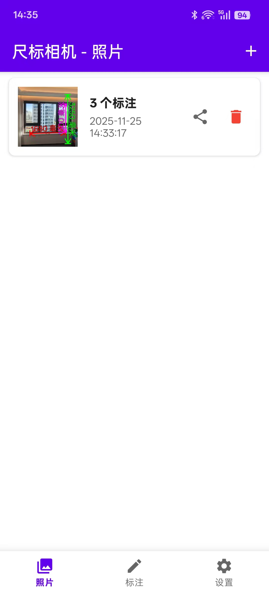
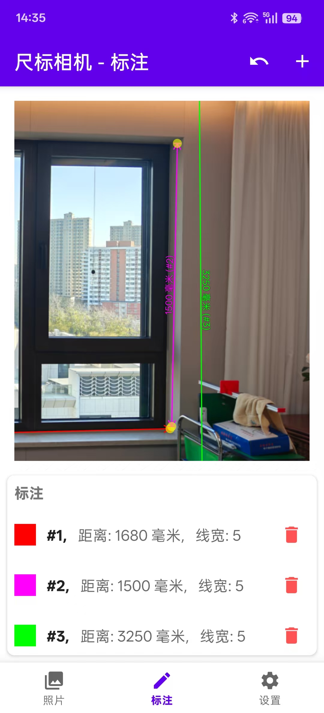
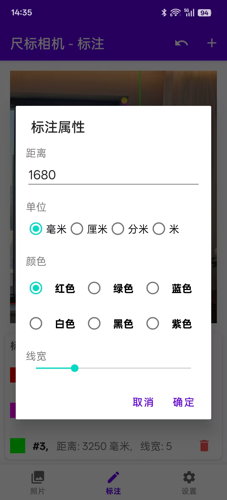
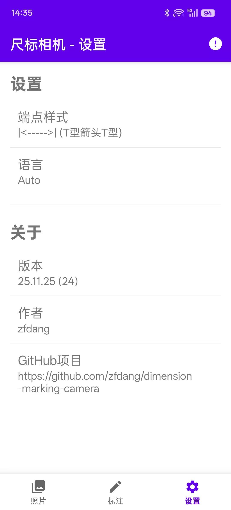
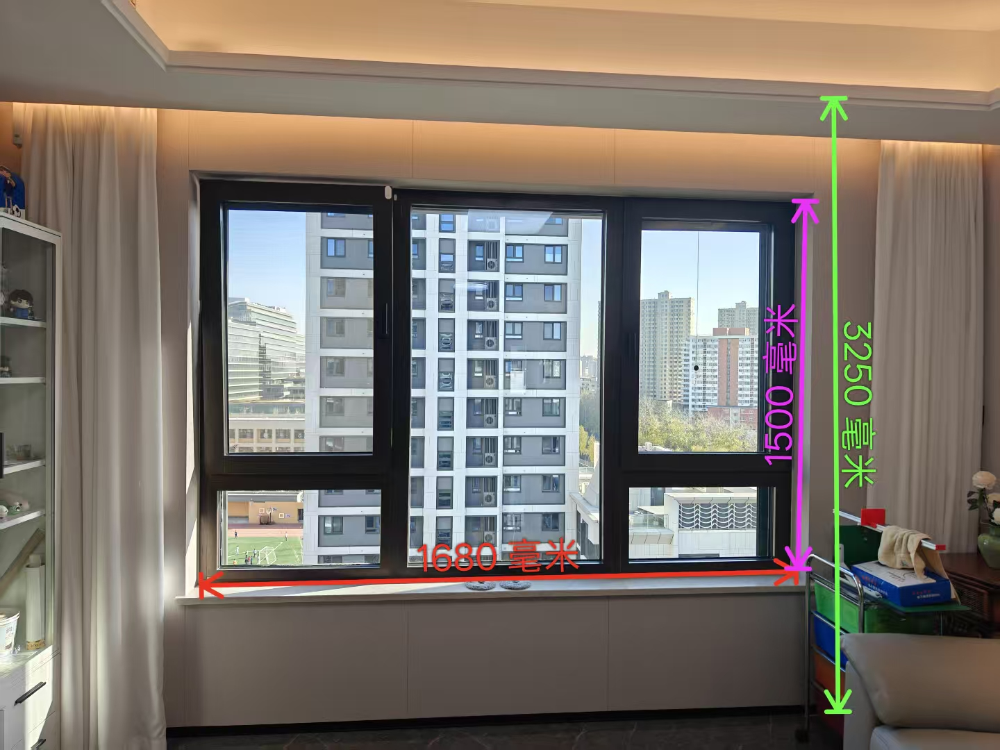

English | 中文

DimCam 尺标相机
尺寸标注相机 - Dimension Marking Camera
开源的 Android 照片标注工具
尺寸标注相机是一款无广告、开源的 Android 应用程序，可以让您拍摄或选择照片，添加精确的点对点测量标注，并导出带有精美标注的图片。
主要功能
- 照片管理 - 拍照或从相册选择，网格缩略图预览，非破坏性删除
- 精确标注 - 放置起点/终点，输入距离值，支持多种单位（毫米、厘米、分米、米）
- 自定义样式 - 3种端点样式可选：T型箭头T型、T型T型、箭头箭头
- 丰富的颜色 - 6种颜色可选：红色、绿色、蓝色、白色、黑色、紫色
- 灵活编辑 - 拖拽控制点，调整线条粗细，支持撤销/重做操作
- 多语言支持 - 完整支持中文和英文界面
- 图片导出 - 将高质量的标注图片保存到设备存储
- 清晰架构 - 采用 MVVM 模式、Room 数据库和现代 Android 库构建
技术亮点
- 📱 最低 Android API：24（Android 7.0）
- 🏗️ 架构：MVVM + LiveData + Repository 模式
- 💾 数据库：Room 持久化库
- 🖼️ 图片加载：Glide
- 🔍 图片查看：PhotoView 支持缩放
- 📝 开发语言：Java + XML 布局
应用截图





使用方法
- 启动应用，进入 照片 标签页
- 使用相机拍照或从相册选择照片
- 切换到 标注 标签页
- 点击图片放置起点和终点
- 输入距离测量值并自定义样式
- 使用 导出 按钮保存标注后的图片
参与贡献
欢迎贡献代码！请 Fork 本仓库，创建功能分支，然后提交 Pull Request。
提交前请运行 ./gradlew lint 确保代码质量。